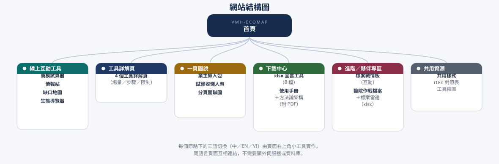

先告訴我你是誰
不同角色關心的問題不同，這裡直接給路徑，不用自己找。
線上互動工具
不必安裝、不必下載，點開就能用。全部在您的瀏覽器裡運算，輸入的資料不會上傳。
互動試算
情報｜每月更新
全國視角
一頁圖說
給沒時間的人看的濃縮版——一張圖講完一件事。
進階／夥伴專區
當某個案子從「評估」進入「爭取」，這裡是實戰工具——鎖定目標、遞件備戰。這一區內容較具體涉入單一案件，建議先跟聯盟窗口確認角色再使用。
下載中心
需要落地作業的檔案。Excel 工具建議用桌機開啟；文件同時提供 PDF 版本，手機也能看。
檔案
用途
格式
關於本站
您可能會問的三個問題。
資料從哪裡來？
法規來自越南官方公告與法律資料庫；市場數據來自衛生部、健保署、國際研究機構與產業媒體；廠商實績來自各公司官網、年報與新聞。每一筆都標了出處與查證日，查不到的標「未查得」，估計值標「估計」——不編數字，是這套工具的第一條原則。
多久更新一次？
情報站與缺口地圖每月自動重新查證一次（法規時程異動、廠商新動作、市場數據、各省新聞），產出新版頁面。超過 120 天未更新的項目，頁面上會自己標示「待更新」提醒您。
這些數字能直接用嗎？
試算器裡的預載案例是市場行情推估值，用於示範方法論與教學，不等於任何一家醫院的實際報價。正式提案前，請以實際詢價與院方數據取代。工具的價值在於「算法正確」，不在於「數字現成」。
網站結構
